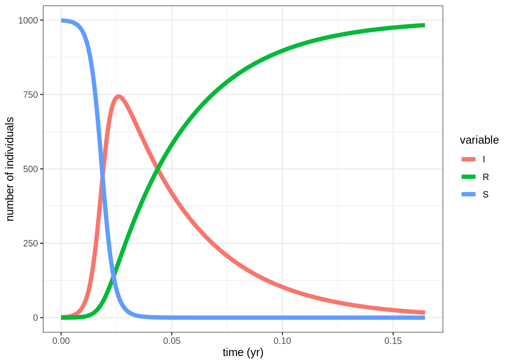
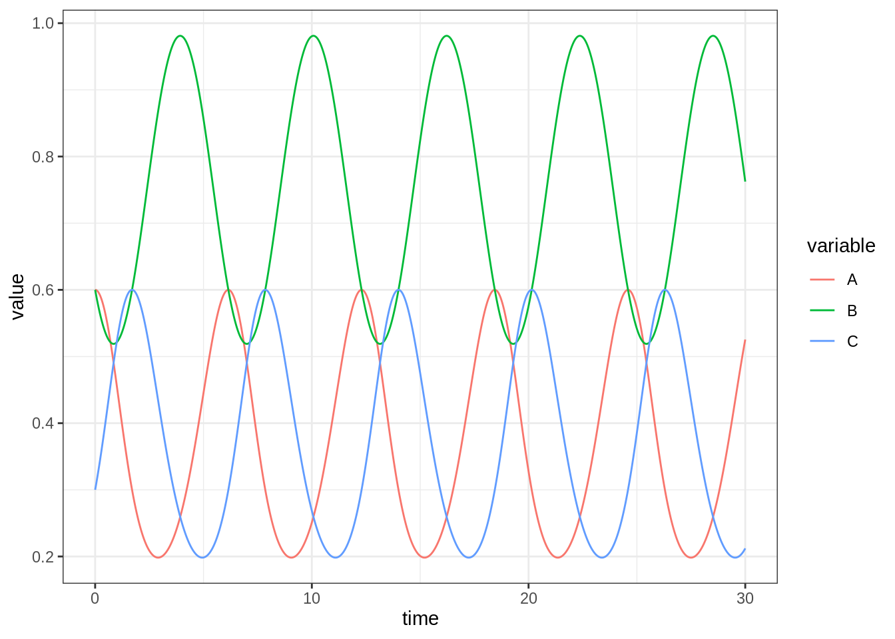
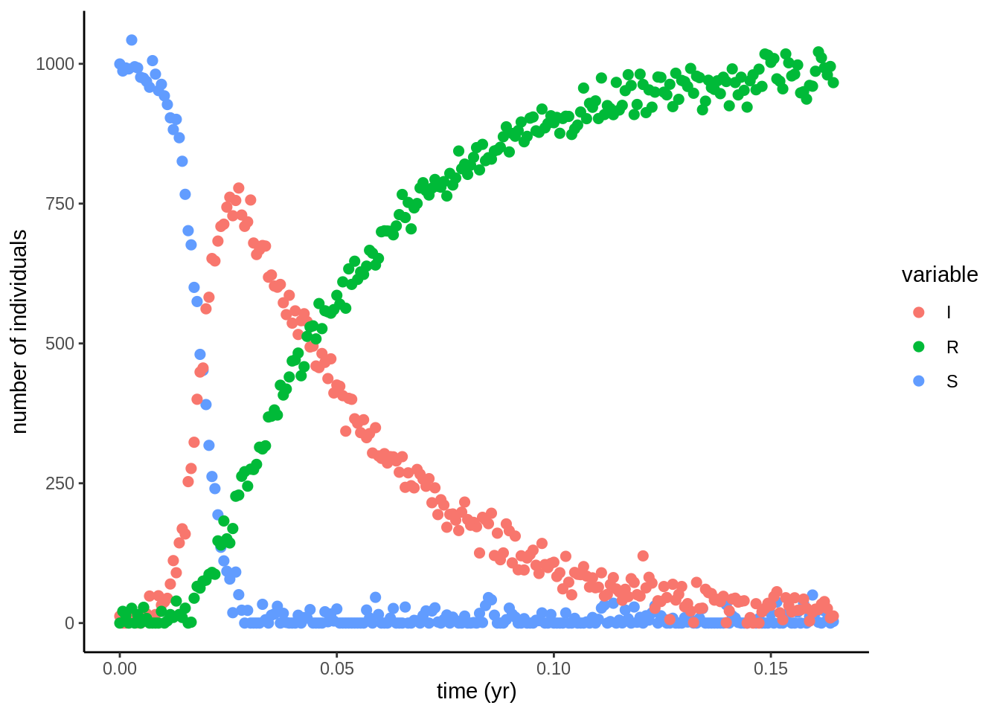

Équations différentielles avec R
State of the R
24-28/08/2020

Differential Equations
CRAN Task View
Le CRAN propose une Task View sur les équations différentielles.
Une équation différentielle est une équation entre une ou plusieurs fonctions inconnues et leurs dérivées. Elle décrit comment une fonction varie par rapport à une ou plusieurs variables (souvent le temps et/ou l’espace) et par rapport à ses dérivées.
Il y a différentes facon de classifier les équations différentielles :
les équations peuvent être stochastique (la quantité inconnue est aléatoire) ou déterministe (la quantité inconnue est déterministe).
les équations peuvent porter sur des fonctions à une seule variable (équation différentielle ordinaire) ou à plusieurs variables (équation aux dérivées partielles).
les équations peuvent inclure des fonctions dont la dérivée à un certain pas de temps dépend de la dérivée à un pas de temps précédent (équation différentielle à retard ou differential equations delay). Elles peuvent aussi inclure des relations algébriques entre les variables (équation différentielle algébrique).
Il existe plusieurs packages R permettant de résoudre ces équations et d’ajuster ces modèles à de la donnée. Ici, seuls les package deSolve et diffeqr sont utilisés pour résoudre des ED.
Résolution numérique d’EDO et d’EDP
Le package deSolve permet de résoudre numériquement des équations simples.
Installation et chargement
install.packages("deSolve")library(tidyverse)
library(GGally)
library(deSolve)
library(fda)
theme_set(theme_bw())EDO simple: la désintégration atomique
On cherche à résoudre \(y' = ay\) avec condition initiale \(y(0) = y_0\). On commence par coder l’équation différentielle: - t représente le temps courant - Y représente l’état courant du système - parameters stocke les paramètres du modèle (ici \(a\))
model <- function(t, Y, parameters) {
with(as.list(parameters), {
dy = -a * Y
list(dy)
})
}On renseigne ensuite la jacobienne \(\frac{\partial y'}{\partial y}\)
jac <- function(t, Y, parameters) {
with(as.list(parameters), {
PD[1, 1] <- a
return(PD)
})
}On peut ensuite résoudre l’EDO pour \(a = 1\) et \(y_0 = 1\) sur l’intervalle \([0, 1]\) des pas de temps de longeur \(0.01\) comme suit:
params <- c(a = 1)
y0 <- c(1)
times <- seq(0, 1, by = 0.01)
PD <- matrix(0, nrow = 1, ncol = 1)
out_atome <- ode(y0, times, model, parms = params, jacfun = jac)Le résultat est une matrice: - une colonne pour le temps (reprend les valeurs de times) - une colonne par dimension dans le système d’équations différentielles
On peut vérifier que la solution numérique (en bleu) est confondue avec la solution analytique (en rouge).
plot_data <-
data.frame(out_atome) %>%
rename(numeric = X1) %>%
mutate(analytic = exp(-time)) %>%
pivot_longer(cols = -time,
names_to = "type",
values_to = "y")
ggplot(plot_data, aes(x = time, y = y, color = type)) +
geom_line() +
ylim(0, 1) +
theme(legend.position = c(0.95, 0.95),
legend.justification = c(1, 1),
legend.background = element_rect(fill = NA))
ode utilise la méthode de Runge-Kutta pour calculer \(y(t)\) et renvoie uniquement les valeurs \(y(0), y(0.01), \dots, y(1)\) mais fait néanmoins appel à des points intérmédiaires lors du calcul. On peut s’en convaincre en comparant les valeurs finales (\(y(1)\)) obtenues avec times = seq(0, 1, by = 0.01) et times = seq(0, 1, by = 1).
On peut diagnostiquer la réussite de l’intégration numérique via la commande diagnostics
diagnostics(out_atome)##
## --------------------
## lsoda return code
## --------------------
##
## return code (idid) = 2
## Integration was successful.
##
## --------------------
## INTEGER values
## --------------------
##
## 1 The return code : 2
## 2 The number of steps taken for the problem so far: 102
## 3 The number of function evaluations for the problem so far: 133
## 5 The method order last used (successfully): 6
## 6 The order of the method to be attempted on the next step: 6
## 7 If return flag =-4,-5: the largest component in error vector 0
## 8 The length of the real work array actually required: 36
## 9 The length of the integer work array actually required: 21
## 14 The number of Jacobian evaluations and LU decompositions so far: 0
## 15 The method indicator for the last succesful step,
## 1=adams (nonstiff), 2= bdf (stiff): 1
## 16 The current method indicator to be attempted on the next step,
## 1=adams (nonstiff), 2= bdf (stiff): 1
##
## --------------------
## RSTATE values
## --------------------
##
## 1 The step size in t last used (successfully): 0.01
## 2 The step size to be attempted on the next step: 0.01
## 3 The current value of the independent variable which the solver has reached: 1.00002
## 4 Tolerance scale factor > 1.0 computed when requesting too much accuracy: 0
## 5 The value of t at the time of the last method switch, if any: 0
## EDO classique: le modèle SIR
Source https://kinglab.eeb.lsa.umich.edu/480/nls/de.html Nous considérons le modèle différentiel classique en épidémiologie.
# Define differential System
closed.sir.model <- function (t, state, parameters) {
## first extract the state variables
S <- state[1]
I <- state[2]
R <- state[3]
## now extract the parameters
beta <- parameters[1]
gamma <- parameters[2]
N <- S + I + R
## now code the model equations
dSdt <- -beta * S * I/N
dIdt <- beta * S * I/N - gamma * I
dRdt <- gamma * I
## combine results into a single vector
dxdt <- c(dSdt,dIdt,dRdt)
## return result as a list!
list(dxdt)
}Define parameters and times of evaluation
parms <- c(beta = 400,gamma = 365/13)
# times stamps
times <- seq(from = 0,to = 60/365,by = 1/365/4)
# initial conditions
xstart <- c(S = 999,I = 1,R = 0)Solving with ODE
out.SIR <-
ode(func = closed.sir.model,
y = xstart,
times = times,
parms = parms,
method = 'lsodar') %>%
as.data.frame()And plot
out.SIR %>%
gather(variable,value,-time) %>%
ggplot(aes(x = time,y = value,color = variable)) +
geom_line(size = 2) +
labs(x = 'time (yr)',y = 'number of individuals')
EDO classique: Modèle de Lorenz
Il s’agit d’une modélisation idéalisée de l’atmosphère. X, Y et Z représentent respectivement les variations verticale et horizontale de la température et le flux de convection.
\[ \left\{ \begin{align} X' &= aX + YZ \\ Y' &= b(Y-Z) \\ Z' &= -XY + cY -Z \\ \end{align} \right. \]
times <- seq(0, 100, by = 0.01)
a <- -8/3
b <- -10
c <- 28
lorenz <- function(t, y, parms) {
with(as.list(y), {
dX <- a * X + Y * Z
dY <- b * (Y - Z)
dZ <- -X * Y + c * Y - Z
list(c(dX, dY, dZ))
})
}
out_lorenz <- ode(y = c(X = 1, Y = 1, Z = 1), times = times, func = lorenz, parms = NULL)
df_lorenz <-
out_lorenz %>%
as_tibble() %>%
mutate_all(as.numeric)
df_lorenz## # A tibble: 10,001 x 4
## time X Y Z
## <dbl> <dbl> <dbl> <dbl>
## 1 0 1 1 1
## 2 0.01 0.985 1.01 1.26
## 3 0.02 0.973 1.05 1.52
## 4 0.03 0.965 1.11 1.80
## 5 0.04 0.962 1.19 2.09
## 6 0.05 0.964 1.29 2.40
## 7 0.06 0.973 1.41 2.74
## 8 0.07 0.990 1.55 3.11
## 9 0.08 1.02 1.72 3.52
## 10 0.09 1.06 1.91 3.97
## # … with 9,991 more rowsggpairs(df_lorenz,
lower = list(continuous = wrap("points", size = 0.1)))
EDO classique: Réaction de Belousov-Zhabotinskii
Il s’agit d’une récation chimique exhibant des motifs périodiques.\[ \begin{align} A+B \xrightarrow{k_A} 2A \\ B+C \xrightarrow{k_B} 2B \\ C+A \xrightarrow{k_C} 2C \\ \end{align} \]
\[ \left\{ \begin{align} \partial_t n_A = n_A (k_A n_B - k_C n_C) \\ \partial_t n_B = n_B (k_B n_C - k_A n_A) \\ \partial_t n_C = n_C (k_C n_A - k_B n_B) \\ \end{align} \right. \]
times <- seq(0, 30, by = 0.01)
k_A <- 1
k_B <- 1
k_C <- 2
bz <- function(t, y, params) {
with(as.list(y), {
dA <- A * (k_A * B - k_C * C)
dB <- B * (k_B * C - k_A * A)
dC <- C * (k_C * A - k_B * B)
list(c(dA, dB, dC))
})
}
out_bz <- ode(y = c(A = 0.6, B = 0.6, C = 0.3), times = times, func = bz, parms = NULL)
out_bz %>%
as_tibble() %>%
mutate_all(as.numeric) %>%
pivot_longer(-time, names_to = "variable", values_to = "value") %>%
ggplot() +
aes(x = time, y = value, color = variable) +
geom_line()
EDP classique
La résolution d’EDP est plus complexe et consiste à transformer les EDPs en EDOs en utilisant la méthode des différences finies.
On illustre la démarche sur un modèle de diffusion de pestes (des aphides) sur une rangée de plantes positionnées entre \(x = 0\) et \(x = 60\).
\[ \frac{\partial N}{\partial t} = - \frac{\partial F}{\partial x} + g \times N \]
où le flux diffusif est donné par \(F = -D \frac{\partial N}{\partial x}\) et les contraintes stipulent que la densité d’aphides tombe à \(0\) aux deux bouts de la rangée de plantes: \(\forall t \geq 0, N(x=0, t) = N(x=60, t) = 0\).
Au temps initial, les aphides ne sont présentes qu’au milieu de la rangée de plantes: \[ N(x, t = 0) = \begin{cases} 1 & \text{if} \quad x = 30 \\ 0 & \text{else} \end{cases} \]
La méthodes des différences finies consiste à diviser le domaine en boîtes et à discrétiser l’équation comme suit \[ \frac{dN_i}{dt} = - \frac{F_{i, i+1} - F_{i-1, i}}{\Delta x_i} + g\times N_i \] où \(N_i\) représente la densité d’aphide au milieu de la boîte tandis que les flux sont définies aux interfaces entre boîtes: \[ F_{i-1, i} = -D_{i, i-1} \times \frac{N_i - N_{i-1}}{\Delta x_{i-1, i}} \] pour se ramener à un système d’EDOs.
On commence par définir les équations du modèle
Aphid <- function(t, APHIDS, parameters) {
with(as.list(parameters), {
## taille des boîtes
deltax <- c(0.5, rep(1, numboxes - 1), 0.5)
## valeurs du flux aux interfaces
Flux <- -D * diff(c(0, APHIDS, 0)) / deltax
## valeurs des dérivées
dAPHIDS <- -diff(Flux) / delx + APHIDS * r
# the return value
list(dAPHIDS)
})
}puis les paramètres du modèle et de la grille de discretisation:
params <- list(
D <- 0.3, # m2/day diffusion rate
r <- 0.01, # /day net growth rate
delx <- 1, # m thickness of boxes
numboxes <- 60,
# distance of boxes on plant, m, 1 m intervals
Distance <- seq(from = 0.5, by = delx, length.out = numboxes)
)et enfin les conditions intiales
# Initial conditions: # ind/m2
APHIDS <- rep(0, times = numboxes)
APHIDS[30:31] <- 1
# initialise state variables
state <- c(APHIDS = APHIDS)on peut alors laisser la densité évoluer sur 200 jours avec un rendu par jour:
out_aphide <- ode.1D(state, times = 0:200, Aphid, parms = params,
nspec = 1, names = "Aphid")Le résultat est comme auparavant une matrice avec la première colonne pour le temps et une colonne par EDO dans la discrétisation.
On peut utiliser ce résultat pour voir la diffusion des aphides dans les plantes au cours du temps:
out_aphide %>%
data.frame %>%
pivot_longer(cols = -time,
names_to = "location",
names_pattern = "APHIDS(.*)",
values_to = "density") %>%
mutate(location = as.integer(location)) %>%
ggplot(aes(x = time, y = location, fill = density)) +
geom_tile() +
scale_fill_viridis_c()
Equation différentielle à retard
Cet exemple est tiré du document : https://cran.r-project.org/web/packages/deSolve/vignettes/deSolve.pdf .
Le modèle logistique est un modèle de dynamique de population simple dans lequel une population donnée évolue jusqu’à atteindre un plateau (la capacité biotique du milieu noté M). La dynamique de la population peut être représentée par l’ED suivante : \(x'(t)=r.x(t).[\frac{1-x(t)}{M}]\). Le terme densité-dépendant \(\frac{1-x(t)}{M}\) peut avoir un effet sur la population avec un temps de retard. L’ED peut alors être réécrite : \(x'(t)=r.x(t).[\frac{1-x(t - \tau)}{M}]\). Sous cette forme l’ED est une équation différentielle à retard (EDR).
Dans le cas d’une population de lemming, le lag est fixé à 9 mois (0.74 année), soit le temps de croissance d’un lemming jusqu’au stade adulte. Le paramètre r est fixé sur la base de données expérimentales et la capacité biotique du milieu (M) est fixée arbitrairement à 19.
Les lignes de codes qui suivent permettent de simuler et de visualiser l’évolution d’une population de lemming (\(1^{ère}\) figure). La deuxième figure représente l’évolution de \(x(t)\) en fonction de \(x(t-\tau)\).
# DDE function
derivs <- function(t, y, parms) {
if (t < 0) {
lag <- 19
} else {
lag <- lagvalue(t - 0.74)
}
dy <- r * y * (1 - lag / m)
list(dy, dy = dy)
}
# parameters
r <- 3.5; m <- 19
# initial values and times
yinit <- c(y = 19.001)
times <- seq(-0.74, 40, by = 0.01)
yout <- dede(y = yinit, times = times, func = derivs,
parms = NULL, atol = 1e-10)
df_out <-
yout %>%
as_tibble() %>%
mutate_all(as.numeric) %>%
mutate(yend = lead(y), dy.yend = lead(dy.y))
ggplot(df_out) +
aes(x = time, y = y) +
geom_line()
ggplot(df_out) +
aes(x = y, y = dy.y, xend = yend, yend = dy.yend) +
geom_segment() +
labs(x = "y", y = "y'")## Warning: Removed 1 rows containing missing values (geom_segment).
diffeqr
Il s’agit d’une interface R pour utiliser le package Julia DifferentialEquations.jl
Sites du package sur le CRAN et sur GitHub
Installation
Pour l’utiliser il faut installer Julia, en le téléchargeant ici
Utiliser le package DifferentialEquations.jl depuis R. Le package ne fonctionne pas avec la version 4.0 donc j’installe la version 3.6 avec conda.
Installation de R avec conda
conda create r=3.6 -n diffeqr -c r
conda activate diffeqr
conda install r-irkernel
conda install jupyterInstallation des packages Julia
Cela peut prendre beaucoup de temps (10 minutes):
using Pkg
Pkg.add(["Plots", "DifferentialEquations", "RCall"])Test du code Julia
using OrdinaryDiffEq
function lorenz(du,u,p,t)
du[1] = p[1]*(u[2]-u[1])
du[2] = u[1]*(p[2]-u[3]) - u[2]
du[3] = u[1]*u[2] - p[3]*u[3]
end
u0 = [1.0;0.0;0.0]
tspan = (0.0,100.0)
prob = ODEProblem(lorenz,u0,tspan)
sol = solve(prob)
plot(sol,vars=(1,2,3))Installation des packages R
install.packages("JuliaCall")
library(JuliaCall)
julia <- julia_setup()julia_call("sqrt", 2)julia_installed_package("DifferentialEquations")julia_library("DifferentialEquations")install.packages("diffeqr")
install.packages("plotly")Modèle de Lorenz
de <- diffeqr::diffeq_setup()Définition de la dérivée
f <- function(u,p,t) {
du1 = p[1]*(u[2]-u[1])
du2 = u[1]*(p[2]-u[3]) - u[2]
du3 = u[1]*u[2] - p[3]*u[3]
return(c(du1,du2,du3))
}Les paramètres sont contenus dans un vecteur p.
u0 <- c(1.0,0.0,0.0)
tspan <- c(0.0,100.0)
p <- c(10.0,28.0,8/3)
prob <- de$ODEProblem(f, u0, tspan, p)
sol <- de$solve(prob)Les méthodes numériques pour la résolution sont très nombreuses. Voir la page ODE solvers.
La solution sol$u est une liste de vecteurs, et sol$u[i] est le vecteur u[i] au temps sol$t[i]. On peut le transformer en matrice R avec sapply:
mat <- sapply(sol$u,identity)Chaque ligne est une série temporelle. Transformation en data.frame
udf <- as.data.frame(t(mat))matplot(sol$t,udf,"l",col=1:3)
timeseries
plotly::plot_ly(udf, x = ~V1, y = ~V2, z = ~V3, type = 'scatter3d', mode = 'lines')
plotly_plot
abstol <- 1e-8
reltol <- 1e-8
saveat <- 0:10000/100
sol <- de$solve(prob,abstol=abstol,reltol=reltol,saveat=saveat)
udf <- as.data.frame(t(sapply(sol$u,identity)))
plotly::plot_ly(udf, x = ~V1, y = ~V2, z = ~V3, type = 'scatter3d', mode = 'lines')
precise_solution
Transformation de toutes la variables en variables Julia
julf <- JuliaCall::julia_eval("
function julf(du,u,p,t)
du[1] = 10.0*(u[2]-u[1])
du[2] = u[1]*(28.0-u[3]) - u[2]
du[3] = u[1]*u[2] - (8/3)*u[3]
end")
JuliaCall::julia_assign("u0", u0)
JuliaCall::julia_assign("p", p)
JuliaCall::julia_assign("tspan", tspan)
prob3 = JuliaCall::julia_eval("ODEProblem(julf, u0, tspan, p)")
sol = de$solve(prob3,de$Tsit5())system.time({ for (i in 1:100){ de$solve(prob ,de$Tsit5()) }})system.time({ for (i in 1:100){ de$solve(fastprob,de$Tsit5()) }})system.time({ for (i in 1:100){ de$solve(prob3 ,de$Tsit5()) }})Stochastic Differential Equation (SDE) Examples
On utilise deux fonctions f et g, où du = f(u,t)dt + g(u,t)dW_t
Résolution d’une SDE
f <- function(u,p,t) {
du1 = p[1]*(u[2]-u[1])
du2 = u[1]*(p[2]-u[3]) - u[2]
du3 = u[1]*u[2] - p[3]*u[3]
return(c(du1,du2,du3))
}
g <- function(u,p,t) {
return(c(0.3*u[1],0.3*u[2],0.3*u[3]))
}
u0 <- c(1.0,0.0,0.0)
tspan <- c(0.0,1.0)
p <- c(10.0,28.0,8/3)
tspan <- c(0.0,100.0)
prob <- de$SDEProblem(f,g,u0,tspan,p)
fastprob <- diffeqr::jitoptimize_sde(de,prob)
sol <- de$solve(fastprob,saveat=0.005)
udf <- as.data.frame(t(sapply(sol$u,identity)))
plotly::plot_ly(udf, x = ~V1, y = ~V2, z = ~V3, type = 'scatter3d', mode = 'lines')
solution sde
Version avec desolve
library(deSolve)
Lorenz <- function(t, state, parameters) {
with(as.list(c(state, parameters)), {
dX <- a * X + Y * Z
dY <- b * (Y - Z)
dZ <- -X * Y + c * Y - Z
list(c(dX, dY, dZ))
})
}
parameters <- c(a = -8/3, b = -10, c = 28)
state <- c(X = 1, Y = 1, Z = 1)
times <- seq(0, 100, by = 0.01)
out <- ode(y = state, times = times, func = Lorenz, parms = parameters)
lorenz_solve <- function (i){
state <- c(X = runif(1), Y = runif(1), Z = runif(1))
parameters <- c(a = -8/3 * runif(1), b = -10 * runif(1), c = 28 * runif(1))
out <- ode(y = state, times = times, func = Lorenz, parms = parameters)
}system.time({ lapply(1:1000,lorenz_solve) })prob_func <- function (prob,i,rep){
de$remake(prob,u0=runif(3)*u0,p=runif(3)*p)
}
ensembleprob = de$EnsembleProblem(fastprob, prob_func = prob_func, safetycopy=FALSE)system.time({ de$solve(ensembleprob,de$Tsit5(),de$EnsembleSerial(),trajectories=1000,saveat=0.01) })Estimation des paramètres
On chercher mainenant à estimer les paramètres structurels d’un système diférentiel à partir d’observations bruitées. On l’applique sur le SIR.
sigma <- 20
noisy <- out.SIR
noisy$S <- pmax(out.SIR$S + rnorm(length(out.SIR$time),0,sigma),0)
noisy$I <- pmax(out.SIR$I + rnorm(length(out.SIR$time),0,sigma),0)
noisy$R <- pmax(out.SIR$R + rnorm(length(out.SIR$time),0,sigma),0)
noisy %>%
gather(variable,value,-time) %>%
ggplot(aes(x = time,y = value,color = variable)) +
geom_point(size = 2) +
theme_classic() +
labs(x = 'time (yr)',y = 'number of individuals')
observ <- noisy[,2:4]Utiliser une méthode des moindres carrés habituelles est rendue compliquée par le fait que la fonction de régression \(f\) est solution d’une quat diff donc n’a pas de solution explicite. De plus, chaque évaluation de la fonction (par un schéma numérique) est couteux d’un point de vue computationnel.
Une autre approche est d’exprimer \(f\) dans une base (spline par exemple), cette fonction devra d’une part s’ajuster aux donnnées et d’autre part être solution du système (qui est introduit comme une pénalité). Cette méthode qui date de 2007, est implémentée dans le package pcode La méthode est décrite dans la vignette du pacakge.
On définit dabord une base de décomposition pour les fonctions (package fda)
#" basis list
knots <- seq(0,max(times),length.out=21)
#order of basis functions
norder <- 4
#number of basis funtions
nbasis <- length(knots) + norder - 2
#creating Bspline basis
basis_dim1 <- create.bspline.basis(c(0,max(times)),nbasis,norder,breaks = knots)
basis = list(basis_dim1,basis_dim1,basis_dim1)Puis on optimise:
pcode.result <- pcode(data = observ, time = times, ode.model = closed.sir.model,
par.initial = c(100,1), par.names = c('beta','gamma'),state.names = c('S','I','R'),
basis.list = basis, lambda = 1e2)Jeton de reproductilité
sessionInfo()## R version 3.6.3 (2020-02-29)
## Platform: x86_64-conda_cos6-linux-gnu (64-bit)
## Running under: Ubuntu 18.04.5 LTS
##
## Matrix products: default
## BLAS/LAPACK: /usr/share/miniconda/envs/finistR2020/lib/libopenblasp-r0.3.10.so
##
## locale:
## [1] LC_CTYPE=C.UTF-8 LC_NUMERIC=C LC_TIME=C.UTF-8
## [4] LC_COLLATE=C.UTF-8 LC_MONETARY=C.UTF-8 LC_MESSAGES=C.UTF-8
## [7] LC_PAPER=C.UTF-8 LC_NAME=C LC_ADDRESS=C
## [10] LC_TELEPHONE=C LC_MEASUREMENT=C.UTF-8 LC_IDENTIFICATION=C
##
## attached base packages:
## [1] stats graphics grDevices utils datasets methods base
##
## other attached packages:
## [1] fda_5.1.5.1 Matrix_1.2-18 deSolve_1.28
## [4] GGally_2.0.0 ggdist_2.2.0 distributional_0.2.0
## [7] DT_0.15 forcats_0.5.0 stringr_1.4.0
## [10] dplyr_1.0.2 purrr_0.3.4 readr_1.3.1
## [13] tidyr_1.1.2 tibble_3.0.3 ggplot2_3.3.2
## [16] tidyverse_1.3.0
##
## loaded via a namespace (and not attached):
## [1] httr_1.4.2 jsonlite_1.7.0 viridisLite_0.3.0
## [4] splines_3.6.3 modelr_0.1.8 assertthat_0.2.1
## [7] highr_0.8 blob_1.2.1 cellranger_1.1.0
## [10] yaml_2.2.1 pillar_1.4.6 backports_1.1.9
## [13] lattice_0.20-41 glue_1.4.2 readODS_1.7.0
## [16] digest_0.6.25 RColorBrewer_1.1-2 rvest_0.3.6
## [19] colorspace_1.4-1 htmltools_0.5.0.9000 plyr_1.8.6
## [22] JuliaCall_0.17.1.9000 pkgconfig_2.0.3 broom_0.7.0
## [25] haven_2.3.1 scales_1.1.1 jpeg_0.1-8.1
## [28] generics_0.0.2 farver_2.0.3 ellipsis_0.3.1
## [31] withr_2.2.0 cli_2.0.2 magrittr_1.5
## [34] crayon_1.3.4 readxl_1.3.1 evaluate_0.14
## [37] fs_1.5.0 fansi_0.4.1 xml2_1.3.2
## [40] tools_3.6.3 hms_0.5.3 lifecycle_0.2.0
## [43] munsell_0.5.0 reprex_0.3.0 compiler_3.6.3
## [46] rlang_0.4.7 grid_3.6.3 rstudioapi_0.11
## [49] htmlwidgets_1.5.1 crosstalk_1.1.0.1 labeling_0.3
## [52] rmarkdown_2.3 gtable_0.3.0 codetools_0.2-16
## [55] DBI_1.1.0 reshape_0.8.8 R6_2.4.1
## [58] lubridate_1.7.9 knitr_1.29 utf8_1.1.4
## [61] stringi_1.4.6 Rcpp_1.0.5 vctrs_0.3.4
## [64] dbplyr_1.4.4 tidyselect_1.1.0 xfun_0.16